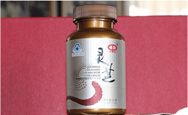
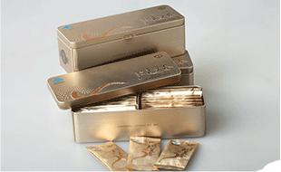
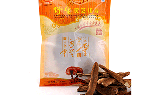
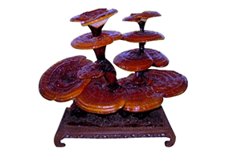

Logo
首页
灵芝知识
公示简介
灵芝文化
产业园区、养生谷
人力资源
新闻中心
产品展示
联系方式
请您留言
产品展示

灵芝破壁孢子粉胶囊
来自本站|阅读数：102
本品是以灵芝破壁孢子粉、灵芝子实体提取物为主要原料制成的保健食品，经功能试验证明，具有免疫调节的保健功能。
﹝主要原料﹞灵芝破壁孢子粉、灵芝子实体提取物
﹝功效成份及含量﹞每100g中含多糖4g
查看更多
泰山灵芝茶——金装
来自本站|阅读数：102
本品是以灵芝、破壁灵芝孢子粉、枸杞、贡菊、甘草等为主要原料制成的保健食品，经功能试验证明，具有免疫调节的保健功能。
﹝主要原料﹞灵芝、破壁灵芝孢子粉、枸杞、贡菊、甘草、甜蜜素、茶叶、槐米、大枣、蜂蜜
﹝功效成份及含量﹞每100g含：粗多糖（以葡聚糖计）1.25g
﹝保健功能﹞免疫调节
查看更多


野生灵芝切片
来自本站|阅读数：102
本品是以灵芝破壁孢子粉、灵芝子实体提取物为主要原料制成的保健食品，经功能试验证明，具有免疫调节的保健功能。
﹝主要原料﹞灵芝破壁孢子粉、灵芝子实体提取物
﹝功效成份及含量﹞每100g中含多糖4g
查看更多
灵芝盆景（大）
来自本站|阅读数：102
灵芝生于名山洁水丛林中，生就是灵气十足，天资香色，被誉为“仙草”，其芝盖形如云，锦纹似“如意”，柄部呈曲之状，姿态优雅，雍容华贵，典雅端庄。
灵芝文化在中国已有数千年的历史，从传说中的“炎帝娇女瑶姬思情洒泪生芝”，“轩辕神龙援芝服食”，“葛洪炼丹成仙”，“武帝梦芝呈祥瑞”“白娘子仗剑峨眉盗仙草救许仙”到红楼梦林黛玉是“灵芝的化身”等，这些美丽的传说，赋予了灵芝绮丽而浪漫的色彩。古人云：国有瑞草国泰民安，家有仙芝吉祥如意！
查看更多

首页
收藏本站
设为首页
联系我们
管理入口
Copyright©All Rights Reserved 中信生物科技 鲁ICP备05055618号
山东中信生物科技有限公司 山东省泰安高新区配天门大街2099号